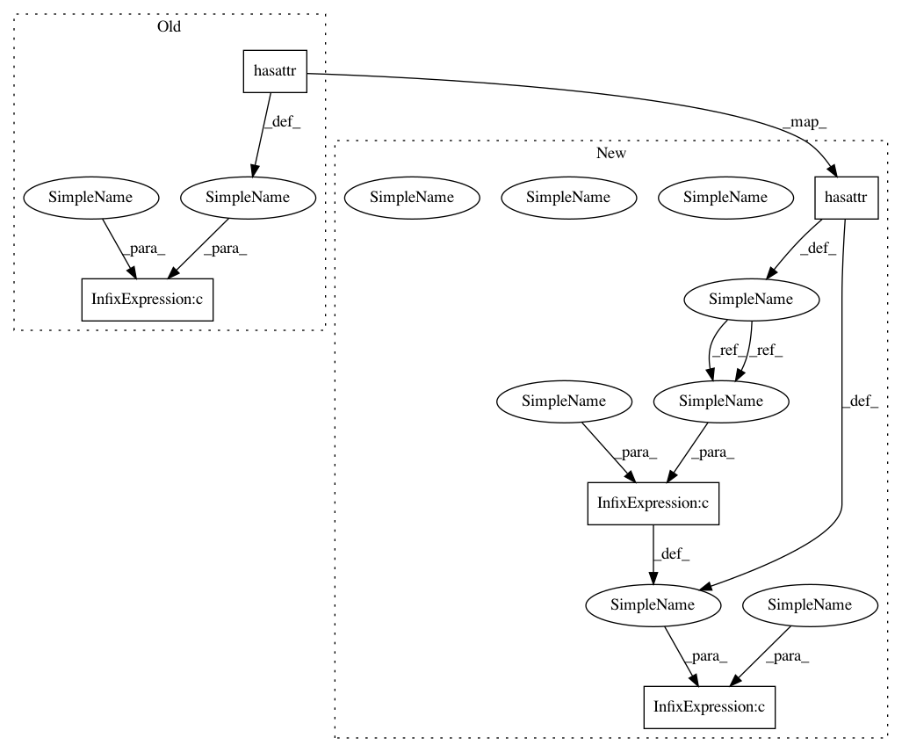

02b6ae5b0a45a4ac3a8644360a652bb0515b337d,nilearn/image/image.py,,new_img_like,#,668
Before Change
and not hasattr(ref_niimg, "get_fdata")
and hasattr(ref_niimg, "__iter__")):
ref_niimg = ref_niimg[0]
if not ((hasattr(ref_niimg, "get_data")
or hasattr(ref_niimg, "get_fdata"))
and hasattr(ref_niimg, "affine")):
if isinstance(ref_niimg, str):
ref_niimg = nibabel.load(ref_niimg)
else:
After Change
if has_iter and not any([is_str, has_get_data, has_get_fdata]):
ref_niimg = ref_niimg[0]
is_str = isinstance(ref_niimg, str)
has_get_data = hasattr(ref_niimg, "get_data")
has_get_fdata = hasattr(ref_niimg, "get_fdata")
has_iter = hasattr(ref_niimg, "__iter__")
has_affine = hasattr(ref_niimg, "affine")
if not ((has_get_data or has_get_fdata) and has_affine):
if is_str:
ref_niimg = nibabel.load(ref_niimg)
else:
In pattern: SUPERPATTERN
Frequency: 4
Non-data size: 5
Instances
Project Name: nilearn/nilearn
Commit Name: 02b6ae5b0a45a4ac3a8644360a652bb0515b337d
Time: 2020-05-20
Author: z.baratz@gmail.com
File Name: nilearn/image/image.py
Class Name:
Method Name: new_img_like
Project Name: nilearn/nilearn
Commit Name: 02b6ae5b0a45a4ac3a8644360a652bb0515b337d
Time: 2020-05-20
Author: z.baratz@gmail.com
File Name: nilearn/image/image.py
Class Name:
Method Name: new_img_like